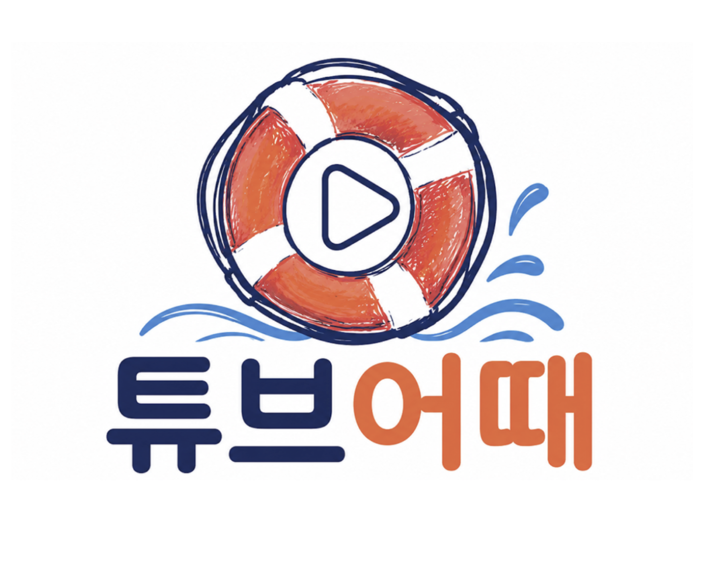

<section class="slide cover">
  <div class="badge indigo" style="background:rgba(255,255,255,0.15); color:#fff;">SKN30 · 2차 단위 프로젝트</div>

  <div class="cover-logo">
    
  </div>

  <p class="slide-subtitle">YouTube 크리에이터 분석을 통한 광고효율 및 지속가능성 추천 시스템</p>

  <p class="tagline">"활동 중단(침몰)하지 않고 안정적으로 떠 있을 크리에이터를 찾아준다"</p>

  <div class="meta">
    <strong>팀 너놀자</strong> · 개발 기간 2026.05.15 ~ 2026.05.22
  </div>
  <div class="slide-footer">
    <span>SKN30 — 2nd Project</span>
    <span>2026 · TubeEottae</span>
  </div>
</section>
